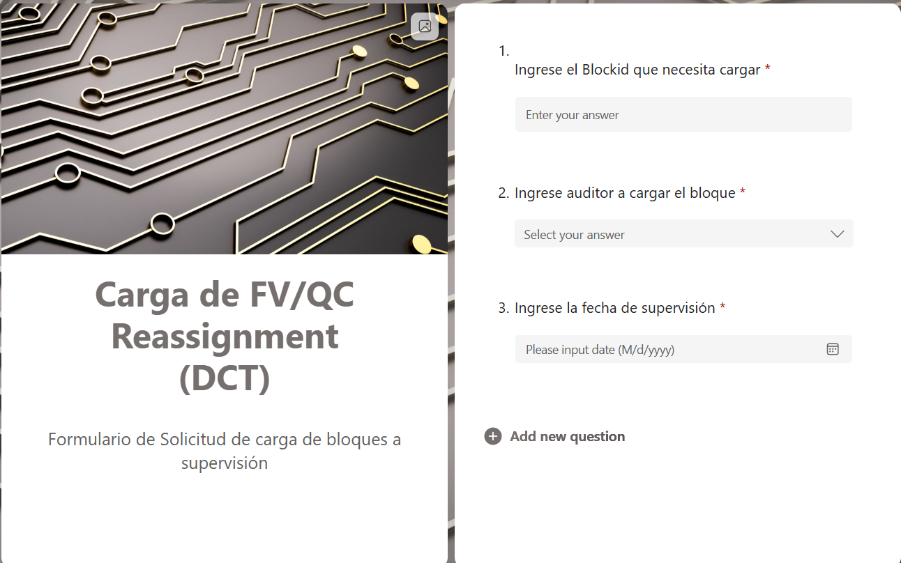
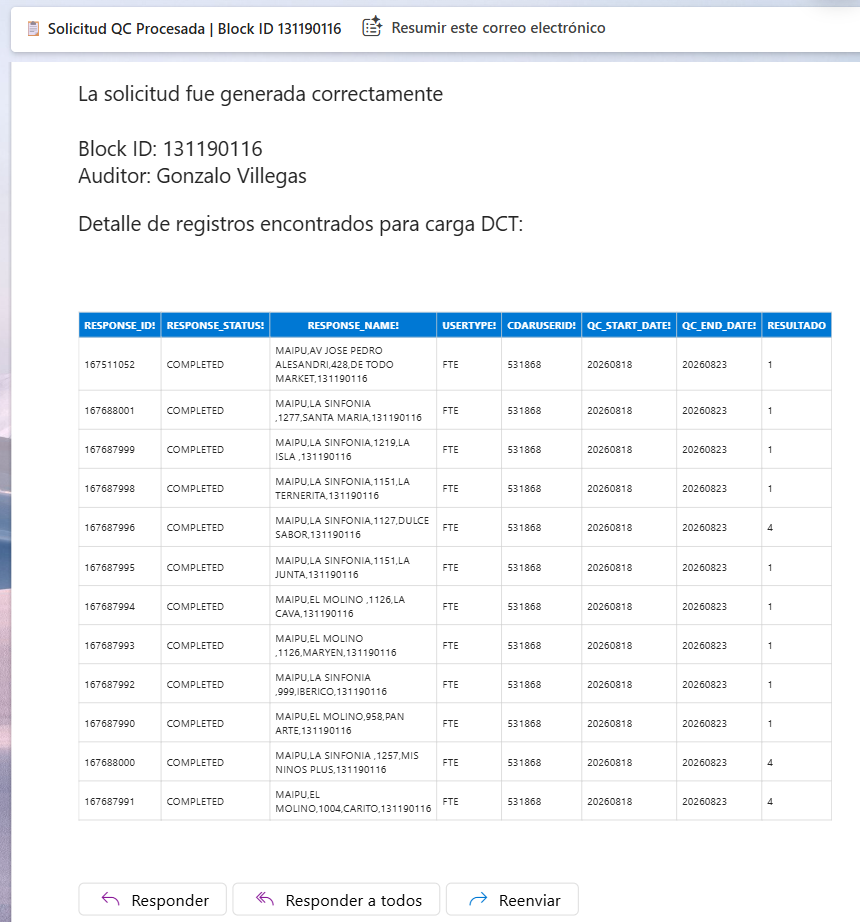

Ingreso de solicitud
La persona que solicita la carga completa un formulario con la información mínima necesaria para iniciar el proceso.
Codigo de bloque
Auditor
Fecha
Solución desarrollada para automatizar la preparación de archivos de carga de tiendas, reduciendo la recopilación manual de información y dejando el archivo listo para ser cargado en la plataforma.
El sistema permite solicitar la carga de un bloque de tiendas mediante un formulario y generar automáticamente la información necesaria para preparar el archivo de carga.
Antes de esta automatización, el proceso requería buscar manualmente cada tienda perteneciente a un bloque, identificar su información asociada y recopilar distintos datos desde archivos y fuentes independientes.
La solución conecta Microsoft Forms, Power Automate, Power BI, Excel y fuentes de Microsoft 365 para realizar automáticamente gran parte de este proceso.
El proceso original requería preparar manualmente un template de carga para cada solicitud.
Para hacerlo era necesario buscar todas las tiendas correspondientes a un mismo bloque, identificar el Response ID de cada una y posteriormente cruzar esa información con otros datos provenientes de archivos utilizados durante el proceso de colecta.
Entre la información necesaria se encontraban estados, nombres, identificadores, fechas y otros campos requeridos por la plataforma de destino.
Este proceso podía tomar aproximadamente 15 minutos por solicitud y representaba cerca de dos horas diarias de trabajo manual.
El proceso comienza con un formulario diseñado para capturar únicamente la información necesaria para iniciar la automatización.
La persona que solicita la carga completa un formulario con la información mínima necesaria para iniciar el proceso.
Al enviar el formulario, Power Automate detecta la nueva respuesta y comienza automáticamente el proceso.
El flujo utiliza el código del bloque para identificar todas las tiendas asociadas y recuperar la información necesaria para construir la solicitud.
Interfaz utilizada para ingresar el código de bloque, auditor y fecha que darán inicio al proceso automático.

Power Automate funciona como el orquestador de todo el proceso.
El flujo comienza con el disparador When a new response is submitted, obteniendo posteriormente las respuestas ingresadas en Microsoft Forms.
Los valores recibidos son organizados mediante Compose y variables para utilizarlos posteriormente en las consultas y cruces de información.
El flujo utiliza acciones como Filter Array, Apply to each, Initialize variable y consultas sobre información almacenada en el ecosistema Microsoft.
De esta forma, el proceso puede trabajar con todas las tiendas asociadas al código de bloque recibido en la solicitud.
Flujo encargado de recibir la solicitud, consultar la información, procesar los datos y preparar el resultado.
Una de las fuentes principales utilizadas por el flujo corresponde al modelo semántico en línea de Smart Censo Comunas.
A partir del código de bloque ingresado en la solicitud, el proceso identifica todas las líneas correspondientes a las tiendas asociadas a ese bloque.
De esta manera se recuperan automáticamente datos que anteriormente debían ser buscados y consolidados de manera manual.
Los datos obtenidos desde Power BI son cruzados con información almacenada en otros archivos y fuentes utilizadas por el proceso.
El flujo completa automáticamente un archivo Excel online utilizando la estructura requerida por la plataforma de destino.
El resultado corresponde a un archivo preparado para ser utilizado directamente en el proceso de carga, eliminando la preparación manual de la información.
El resultado final del proceso es enviado automáticamente al responsable, incluyendo la información necesaria para continuar con la carga.
Una vez finalizado el procesamiento, el sistema genera automáticamente la solicitud de carga.
El correo contiene los datos de la persona que realizó la solicitud, el auditor asignado y la fecha correspondiente.
Además, se adjunta una copia del template completado y una tabla HTML con el resumen de la información generada, facilitando la revisión y utilización de los datos.
La intervención humana queda reducida principalmente a revisar la solicitud y subir el archivo generado a la plataforma correspondiente.
El responsable recibe automáticamente el resultado generado por el flujo, junto con el archivo preparado para continuar con el proceso de carga.

Se elimina la búsqueda y consolidación manual de información para preparar cada solicitud.
El proceso anterior podía requerir aproximadamente 15 minutos por solicitud, llegando a representar cerca de dos horas diarias de trabajo.
La información es obtenida y procesada mediante un flujo estructurado, reduciendo la posibilidad de errores asociados a la recopilación manual.
Desde el ingreso de la solicitud hasta la generación del archivo y envío por correo, el proceso queda conectado mediante automatización.
Nota: este caso de estudio presenta la arquitectura, metodología y tecnologías utilizadas de forma general. Los datos, nombres de clientes, información comercial y elementos confidenciales han sido omitidos o generalizados.